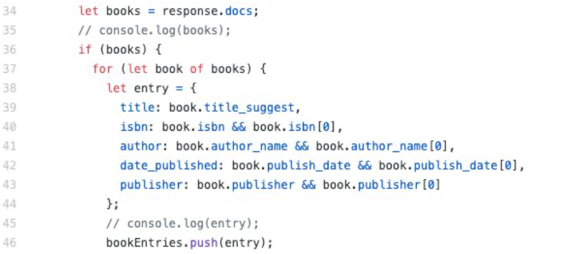
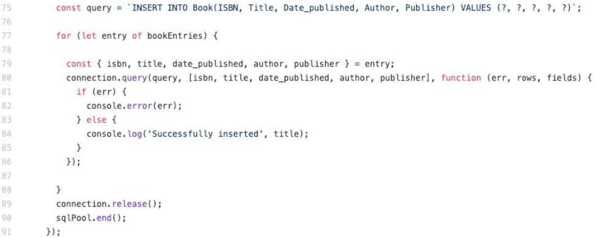
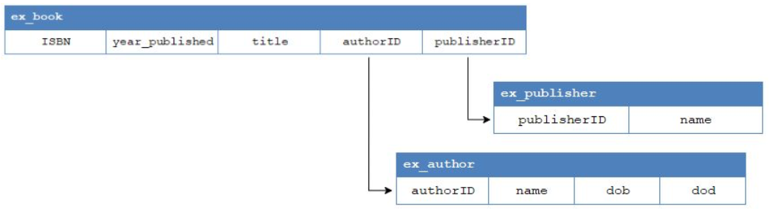
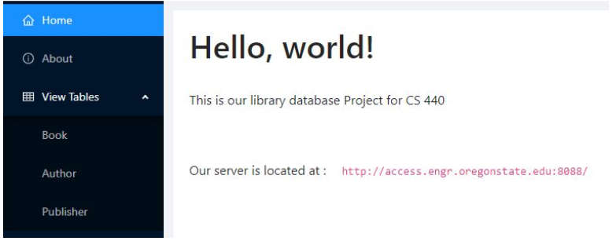
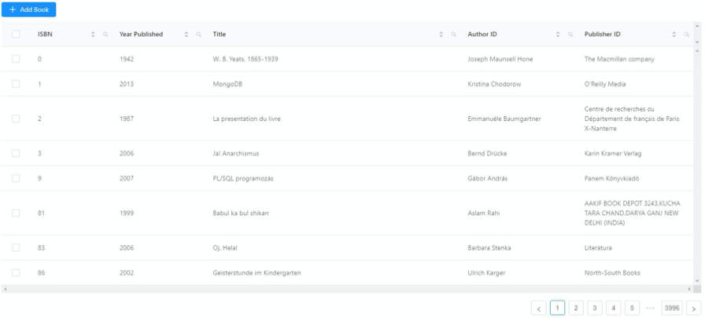
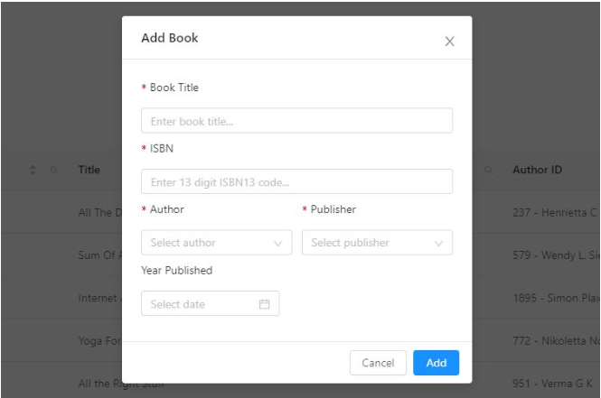

Database Management Systems
Uses: SQL, Express, React.js, and Node.js
Goal:
The goal of this project was to learn how to use the system to run queries fast, pick the right system, customize data management system. As well as, understand the challenges of managing, querying, and analyzing large volumes of various data sets and study the principles and algorithms used to address these challenges.
After this project I was able to implement these abstractions efficiently:
- Storage management and indexing
- Access/ Retrieve records in a large file fast
- Query processing/optimization
- Run complex queries over large data fast
- Transaction management
- Not let users interfere with each other’s work
- Cope with failure and loss of data (e.g, power outage in the middle of a program)
Project
The project involves the development of a library catalog containing books, journals, periodicals, and other kinds of written works. Librarians and library members can view, add, edit, or delete publications. They can also view and add authors and publishers. The project focuses on building new data systems and developing novel data and query models by discussing classic and new research papers in the area of data management and analytics.
Data in the database is imported from third-party databases. Once retrieved, the team implemented programs to parse for relevant information (ISBNs, titles, published years, authors, and publishers) and insert it into the MariaDB, the SQL database powering this library catalog.
Design
The library catalog application is built with the “SERN” stack (SQL, Express, React.js, and Node.js):
SQL database: Provides data to the application
Express: Framework for building a backend API to which the front end UI can request
CRUD operations
React.js: Framework for building an interactive UI
Node.js: Framework for building the backend server
Aside from the main web stack technologies the project used the following to retrieve and insert huge amounts of data into the SQL database:
Node.js: Makes HTTP requests to API endpoints, parses JSON responses for relevant data, and insert data into the DB
Bash Script: Passes search queries to the Node.js scripts as command-line arguments. It loops through multiple queries (alphabet letters) and runs for an extended period of time.
Processing and Importing the Data
This step is one of the most important steps in the entire project because it can potentially mess up the insertion of the database. Extensive testing was done to correctly parse data and ensure it did not degrade the integrity of existing tables.
For JSON responses, used Node.js to treat them as native objects and cherry-pick properties the after.
For inserting the same data, testing was done to ensure the JavaScript properties were inserted into the correct attributes on a given table. Furthermore, this had to be implemented and tested for every API used, since the response from each was in a different format.
The following code snippet demonstrates how the data retrieval script picks out relevant data
The next code snippet involves formulating a SQL insertion query from the above data and making a request to the MariaDB server:

Database Schema
The database is comprised of the following tables:
- ex_book: contains the list of books and the following information about them:
- ISBN: the ISBN of the book (ISBN13).
- year_published: the year that the book was published. Saved as a SQL ‘year’ data type instead of date, since the dates obtained for the data have inconsistent formats.
- title: the title of the book.
- authorID: a foreign key that links to the authorID in ex_author , used to replace the integer authorID key with the string value of the author’s name.
- publisherID: a foreign key that links to the publisherID in ex_publisher , used to replace the integer publisherID key with the string value of the publisher’s name.
- ex_author: contains the names of all authors that appear in the book table:
- authorID: ID applied to the author name. Auto-increments with each new tuple.
- name: the name of the author.
- ex_publisher: contains the names of all publishers that appear in the book table:
- publisherID: ID applied to the publisher name. Auto-increments with each new tuple.
- name: the name of the publishing company.
The ex_author and ex_publisher tables were created to hold values that would appear more than one time in the ex_book table. This choice was in part to limit the addition of books whose author and/or publisher were unknown, requiring the user to add the author/publisher to their respective table first.

Website Backend (Server.js)
The express-based backend to the website is used to fetch and manipulate the tables in the database via a user interface. There are three different types of actions the backend is capable of performing:
- GET: allows for fetching the tables. Only one functions exists for this, running the query SELECT * FROM <table>
- POST: allows for a tuple to be inserted into a selected table by running the query INSERT INTO <table> (<columns>) VALUES (<column values>)
- PUT: allows for a tuple in a selected table to be updated by running the query
UPDATE <table> SET <variable> = <data> WHERE <ID> = <passed ID> - DELETE: allows for a tuple in a selected table to be deleted by running the query DELETE FROM <table> WHERE <ID> = <passed ID>
- If deleting from ex_book , the tuple is deleted immediately.
- If deleting from ex_author or e x_publisher , all tuples within ex_book that contain the ID of the author/publisher being deleted are deleted first to ensure that no foreign key constraints are hit (there are no tuples in ex_book that reference a value that no longer exists).
Website



Testing and Results
Data Integration
Testing was done on all aspects of the design listed above, notably data integration and the web application. The team tested data insertion by running a few queries on a third-party API and ensured the data was correctly imported into the DB. Testing involved looking up the tables in MariaDB’s phpMyAdmin UI and the command line MySQL tool. If data insertion produced errors, simply truncated the table, fixed the bugs, and restarted the process.
Once verified, program allowed a shell script to repeatedly run the data insertion program for the rest of the queries.
Web Application
The web application was tested manually by selecting a multitude of values supplied within the form. Since the forms are fairly simple, there aren’t many edge cases in which user input could be interpreted incorrectly. The website’s backend was tested with Postman, making several calls to each of the endpoints, passing data that came from the output of the website’s forms.